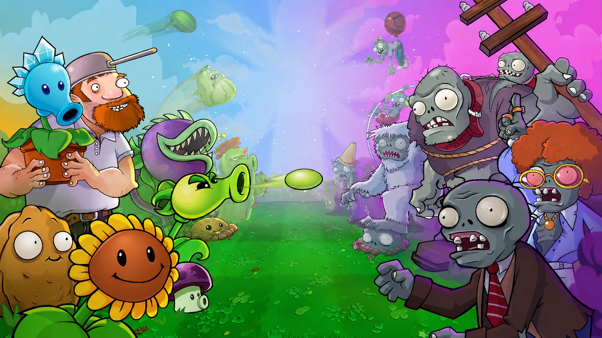
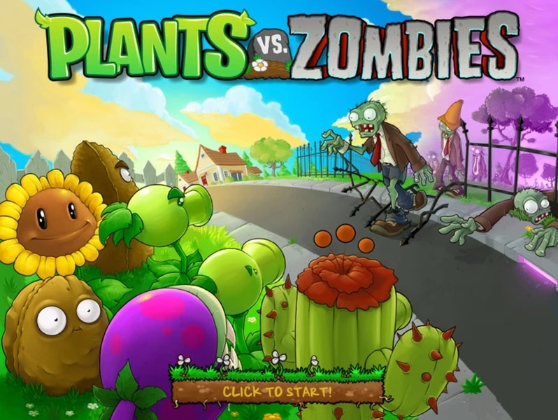
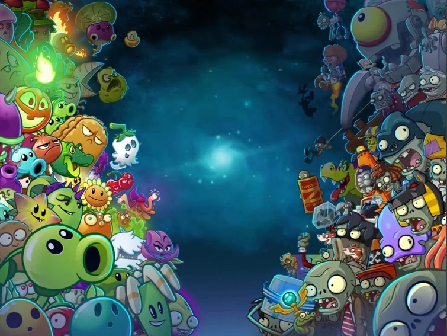
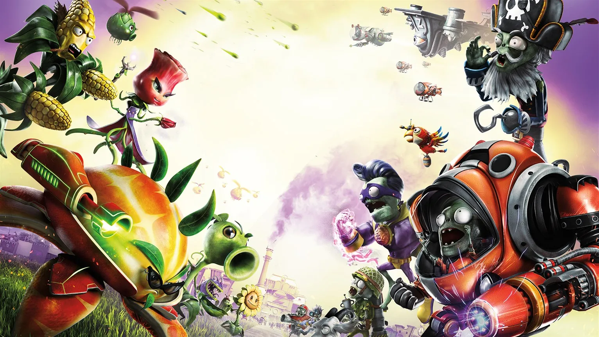
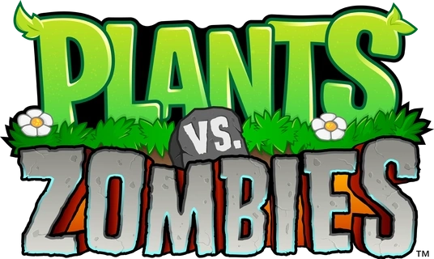

Plants Vs Zombies Garden Warfare 2
Nova mecânica derivada do PvZGW1, FPS. Agora você pode controlar as plantas/zumbis!
Saber mais




Nova mecânica derivada do PvZGW1, FPS. Agora você pode controlar as plantas/zumbis!
Saber mais